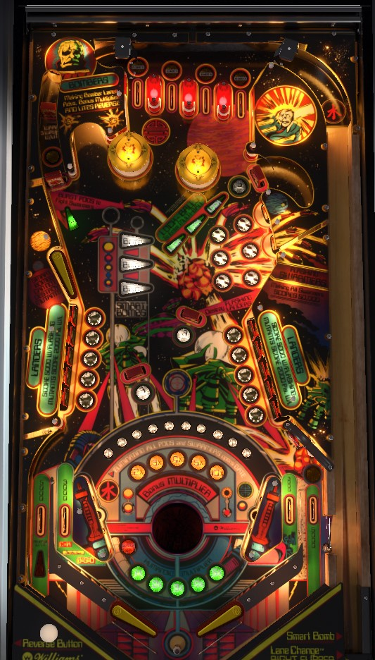

Complete Waves by hitting a total of 15 drop targets in either lower bank. The bonus for completing a wave, as well as your end of ball bonus, is based on how many of the 10 humans are alive. After some time, a drop target will begin flashing, indicating a human is at risk; if still more time passes, the human will be captured, and you'll need to hit the standup target behind the lit drop target to complete the wave. Completing the top lanes lights the manual left out lane kickback. Each wave up to 5 is more valuable than the last; get the bonus X to 10x and complete the inline targets in the upper left to advance 3 waves.
Roll through an unlit top lane to light it. Unlit lanes score 1,000 points, while already-lit lanes score 3,000. Complete the lanes by lighting all 4. Lane change is available with the right flipper only for moving the lit lanes around. Completing the lanes advances the bonus multiplier in the sequence 2x-3x-4x-5x-10x and relights the kickback in the left out lane.
The main goal of Defender is to progress through Waves by destroying Landers. Landers, in this case, are the drop targets. At first, 5 random targets of the 10 in the two banks combined will be raised. Knock down all 5 or wait for a few seconds to raise more targets. Hit 15 Lander drop targets to advance to the next Wave. Hitting a drop target scores 500 points. After some time passes, a Mutant will put one of the humans in danger, signfied by a flashing drop target. Hit this target to score 5,000 points and save the human. If a drop target is flashing for too long, it will become solidly lit; this means the human has been lost, and you will need to hit the standup target behind the lit drop target to score 2,000 points.
Once 15 Lander drop targets have been hit and all solidly lit Mutants were shot as well, you will receive a bonus of 1,000 points times the current Wave number (maximum 5) for each human that is still lit in the arch that connects the tops of the two slingshots on the playfield. Then, a new Wave begins. The more Waves you clear, the less time it will take for drop targets to start flashing, and the less time it will take for a flashing drop target to turn solid. If you run out of your 10 humans, you can continue to play, but you'll have no end of ball bonus or end of wave bonus unless you advance to a Wave number that is a multiple of 5. You also get all 10 of your humans back if the pinball drains.
As Waves progress, the Baiter drop targets will also occasionally pop up. The Baiter targets are three standalone drop targets: two in the center of the playfield, and one in front of the lock shot. Knocking down any of these targets scores 3,000 points and does NOT count toward the 15 Lander targets you need to complete the wave.
The inline drop targets in the upper left lane each score 10,000 points. Each target also lights a random number of the Swarmers (usually 2), which rapidly move between the three upper right standup targets. Upper right standup targets score 3,000 points. If the target was lit white for a Swarmer, that Swarmer will also be defeated. Destroying the last lit Swarmer in any set scores 50,000 points. Destroying all of the Swarmers in both sets opens the right out lane gate, which redirects a ball back to the shooter lane one time.
Locks are available at the lock lane at almost any time. The lock lane is in the upper right near the Swarmer targets; it is intended to be shot with the upper left flipper, but it can be made directly from the lower left flipper or as a bank shot from the lower right flipper. Locking a ball scores 5,000 points. If there are one or more balls in the lock, the standup target at the end of the upper left inline lane will be lit to start multiball, releasing all balls from the lock. You can also start multiball instantly by locking 3 balls yourself. If you lock a ball when there are already 2 balls in the lock, one locked ball will be spit out since there are only 3 balls in the game. In a 2-player game, each person keeps track of their locks separately, but if one person starts multiball, the other person also loses all of their locks. There are no multiball-specific scoring features, just more balls flying around the playfield to help you hit targets and complete Waves. You cannot relock balls while a multiball is in progress: they will be spit out immediately.
If the bonus multiplier has been maxed out at 10x, the standup target at the end of the upper left inline lane will be lit for Warp, which instantly advances you forward by 3 entire Waves. I believe this can only be done once per ball.
You start the game with 3 Smart Bombs, and they are used by hitting the second flipper button on the right side of the cabinet. Using a Smart Bomb instantly defeats all Lander drop targets, Baiter drop targets, and Swarmer standup targets that are currently on the playfield. If all 10 Lander drop targets are raised and none of them are solidly lit for Mutant, using a Smart Bomb instantly clears the current wave. You get 1 additional Smart Bomb every time you complete an odd-numbered wave (1, 3, 5, etc.).
Advancing to a wave that is a multiple of 5 awards an instant extra ball. Clearing wave 10 scores an instant special.
Defender has a conventional in/out lane setup. In lanes score 3,000 points.
The left out lane score 5,000 points, and is lit for Reverse every time the top lanes are completed. The Reverse is a single-use manual kickback; you must use the second flipper button on the left side of the cabinet to fire the kickback with the right timing that it will be able to get the ball back into play. Yes, this is as difficult as it sounds.
The right out lane scores 5,000 points, or 20,000 when lit; light this lane by completing both sets of Swarmers that appear after hitting the two upper left inline drop targets, which also opens the gate. The gate can be used once and redirects a right out lane ball to the shooter lane for a replunge. Don't take too much of a break if you get a replunge in this way- the timers on Mutant appearances and takeovers continue to run while the ball is in the shooter lane.
There is a center peg between and slightly below the flippers that occasionally saves center drains as well.
Bonus is equal to 1,000 points times the number of currently living Humans (maximum 10), times the Wave number (maximum 5), times the bonus multiplier earned from top lanes (each completion advances the multiplier in the sequence 2x-3x-4x-5x-10x). Max bonus is 5x 10x 10,000 = 500,000 points. At the beginning of each ball, your number of Humans is restored back to 10 in case any of them had fallen to a Mutant because you took too long to hit a specific drop target earlier in the game. Bonus multiplier carries over from ball to ball, unless you max it out at 10x, in which case it will reset back to 1x for your next turn. Completing a Wave partially collects the end of ball bonus: it ignores the top lanes bonus multiplier, instead being calculated as 1,000 points per lit Human times the Wave multiplier, for a maximum of 50,000.
Special can be set to award points; I believe this would be worth 50,000 but am not certain. I am not aware of a setting that allows extra ball to be worth points.
Most game features have a setting that dictates whether they stay lit from ball to ball or not. The most notable of these are the bonus multiplier (default Yes, but always resets after draining with 10x) and the Reverse kickback (also default Yes).
The number of waves needed to score the instant special can be set to anywhere from 1 to 99. Default is 10. There does not seem to be a setting that governs how frequently extra ball can be awarded.